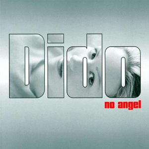

:: NO ANGEL - THE REMIXES::
Lançamento: 2002

Versão remixada do álbum de estréia No Angel, lançado somente no Brasil. Contém os principais
hits da cantora e exclusiva remixagem da música My Lover's Gone pelo Memê Mix, música que
fez sucesso com a novela "O Clone" da Rede Globo e estourou nas paradas em todas as rádios
nacionais. Traz ainda 3 vídeos, um clipe e duas apresentações ao vivo.
Relação das músicas:
:: áudio
- Here With Me (Lukas Burton Remix)
- Thankyou (Deep Dish Remix)
- Hunter (MJ Cole Remix)
- All You Want (Divide And Rule Remix)
- Take My Hand (Rollo & Sister Bliss Remix)
- My Lover's Gone (Memê Mix) (Bonus Track)
:: Vídeo
- Hunter (video)
- All You Want (Live)
- Honestly OK (Live)